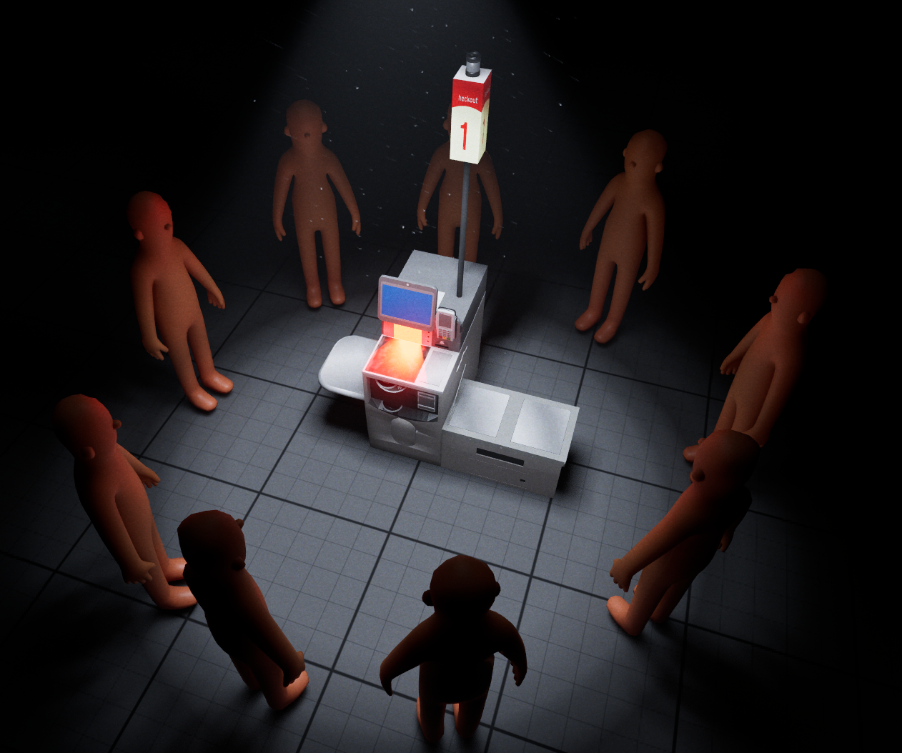

A work-in-progress game about self-checkout at the grocery store.
Project status: Pre-production.
Creating an Unreal prototype to validate look and feel, mechanics and narrative. First prototype playtests at GDC in March 2026.

POV, you have more than "5 items or less"
Early footage from gameplay mechanic development, taking items from the grocery cart and scanning them. Soon to have non-placeholder meshes, take place in an intentional environment, and undergo heavy horror-post-processing